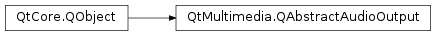

QAbstractAudioOutput¶
Detailed Description¶
The
PySide2.QtMultimedia.QAbstractAudioOutputclass is a base class for audio backends.
PySide2.QtMultimedia.QAbstractAudioOutputimplements audio functionality forPySide2.QtMultimedia.QAudioOutput, i.e.,PySide2.QtMultimedia.QAudioOutputroutes function calls toPySide2.QtMultimedia.QAbstractAudioOutput. For a description of the functionality that is implemented, see thePySide2.QtMultimedia.QAudioOutputclass and function descriptions.See also
-
class
PySide2.QtMultimedia.QAbstractAudioOutput¶
-
PySide2.QtMultimedia.QAbstractAudioOutput.bufferSize()¶ Return type: PySide2.QtCore.intReturns the audio buffer size in bytes.
-
PySide2.QtMultimedia.QAbstractAudioOutput.bytesFree()¶ Return type: PySide2.QtCore.intReturns the free space available in bytes in the audio buffer.
-
PySide2.QtMultimedia.QAbstractAudioOutput.category()¶ Return type: unicode
-
PySide2.QtMultimedia.QAbstractAudioOutput.elapsedUSecs()¶ Return type: PySide2.QtCore.qint64Returns the milliseconds since
PySide2.QtMultimedia.QAbstractAudioOutput.start()was called, including time in Idle and suspend states.
-
PySide2.QtMultimedia.QAbstractAudioOutput.error()¶ Return type: PySide2.QtMultimedia.QAudio.ErrorReturns the error state.
-
PySide2.QtMultimedia.QAbstractAudioOutput.errorChanged(error)¶ Parameters: error – PySide2.QtMultimedia.QAudio.Error
-
PySide2.QtMultimedia.QAbstractAudioOutput.format()¶ Return type: PySide2.QtMultimedia.QAudioFormatReturns the
PySide2.QtMultimedia.QAudioFormatbeing used.
-
PySide2.QtMultimedia.QAbstractAudioOutput.notify()¶
-
PySide2.QtMultimedia.QAbstractAudioOutput.notifyInterval()¶ Return type: PySide2.QtCore.intReturns the notify interval in milliseconds.
-
PySide2.QtMultimedia.QAbstractAudioOutput.periodSize()¶ Return type: PySide2.QtCore.intReturns the period size in bytes.
-
PySide2.QtMultimedia.QAbstractAudioOutput.processedUSecs()¶ Return type: PySide2.QtCore.qint64Returns the amount of audio data processed since
PySide2.QtMultimedia.QAbstractAudioOutput.start()was called in milliseconds.
-
PySide2.QtMultimedia.QAbstractAudioOutput.reset()¶ Drops all audio data in the buffers, resets buffers to zero.
-
PySide2.QtMultimedia.QAbstractAudioOutput.resume()¶ Resumes processing audio data after a
PySide2.QtMultimedia.QAbstractAudioOutput.suspend()
-
PySide2.QtMultimedia.QAbstractAudioOutput.setBufferSize(value)¶ Parameters: value – PySide2.QtCore.intSets the audio buffer size to
valuein bytes.
-
PySide2.QtMultimedia.QAbstractAudioOutput.setCategory(arg__1)¶ Parameters: arg__1 – unicode
-
PySide2.QtMultimedia.QAbstractAudioOutput.setFormat(fmt)¶ Parameters: fmt – PySide2.QtMultimedia.QAudioFormatSet the
PySide2.QtMultimedia.QAudioFormatto use tofmt. Setting the format is only allowable while inQAudio.StoppedState.
-
PySide2.QtMultimedia.QAbstractAudioOutput.setNotifyInterval(milliSeconds)¶ Parameters: milliSeconds – PySide2.QtCore.intSets the interval for
PySide2.QtMultimedia.QAbstractAudioOutput.notify()signal to be emitted. This is based on themsof audio data processed not on actual real-time. The resolution of the timer is platform specific.
-
PySide2.QtMultimedia.QAbstractAudioOutput.setVolume(arg__1)¶ Parameters: arg__1 – PySide2.QtCore.qrealSets the volume. Where
volumeis between 0.0 and 1.0.
-
PySide2.QtMultimedia.QAbstractAudioOutput.start(device)¶ Parameters: device – PySide2.QtCore.QIODeviceUses the
deviceas thePySide2.QtCore.QIODeviceto transfer data.
-
PySide2.QtMultimedia.QAbstractAudioOutput.start() Return type: PySide2.QtCore.QIODeviceReturns a pointer to the
PySide2.QtCore.QIODevicebeing used to handle the data transfer. ThisPySide2.QtCore.QIODevicecan be used to write() audio data directly.
-
PySide2.QtMultimedia.QAbstractAudioOutput.state()¶ Return type: PySide2.QtMultimedia.QAudio.StateReturns the state of audio processing.
-
PySide2.QtMultimedia.QAbstractAudioOutput.stateChanged(state)¶ Parameters: state – PySide2.QtMultimedia.QAudio.State
-
PySide2.QtMultimedia.QAbstractAudioOutput.stop()¶ Stops the audio output.
-
PySide2.QtMultimedia.QAbstractAudioOutput.suspend()¶ Stops processing audio data, preserving buffered audio data.
-
PySide2.QtMultimedia.QAbstractAudioOutput.volume()¶ Return type: PySide2.QtCore.qrealReturns the volume in the range 0.0 and 1.0.
© 2018 The Qt Company Ltd. Documentation contributions included herein are the copyrights of their respective owners. The documentation provided herein is licensed under the terms of the GNU Free Documentation License version 1.3 as published by the Free Software Foundation. Qt and respective logos are trademarks of The Qt Company Ltd. in Finland and/or other countries worldwide. All other trademarks are property of their respective owners.